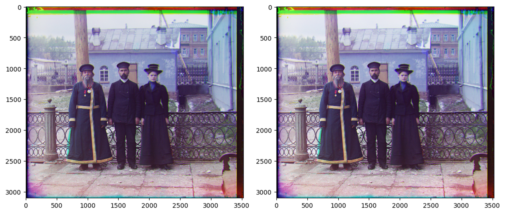
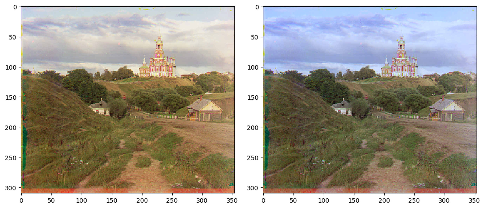

Project 1: Images of the Russian Empire:
Colorizing the Prokudin-Gorskii photo collection
In this project, we want to colorize the Prokudin-Gorskii photo collection, which is taken in red, green, and blue filters.
Gallery
See the beautifully reconstructed example images!
More images from the collection
Bells and Whistles
Here are some bells and whistles that I added to the project.
Automatic cropping
The original images contain some white, black borders. I removed them by computing mean color of border lines starting from the outside of the image and stopping when the color is too different from specified color.
Automatic contrasting
I rescaled the image so that the the darkest pixel is zero and the brightest pixel is one.

Automatic white balance
I computed the average color of the image and shifted the image so that the average color is gray.

Better color mapping
I mapped the color channels to the RGB channels based on heuristics. The original image has good color balance thanks to the automatic white balance, so I intentionally selected some different colors to perform the mapping.
Better features
I used the magnitude of gradients of the image to align the images.